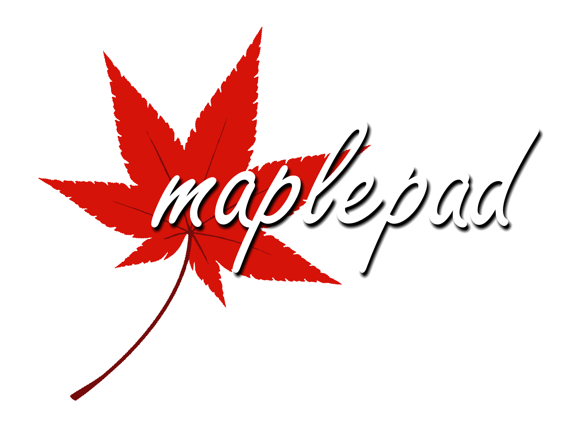
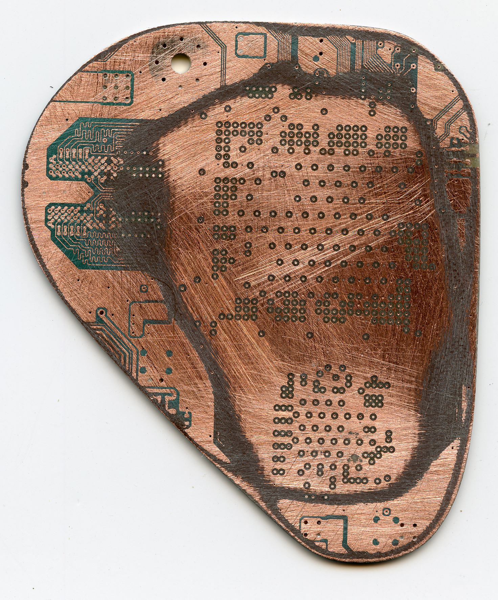

Many of my electronics projects are related to portablizing, which is the hobby of turning video game consoles into battery-powered handheld devices.
UltraWii
UltraWii is a portable Nintendo Wii I spent a few years iterating on throughout college. It uses a real Wii motherboard that has been trimmed down with a Dremel and runs for over six hours from four 18650 cells. I designed the plastic shell in Fusion 360 and 3D printed it on my Prusa i3 MK3. I also designed six PCBs in the unit, including a main four-layer board that incorporates USB C PD negotiation, 5A battery charging, voltage regulation for the Wii’s various voltage lines, an I2S audio amp, and thermal protection.

I designed the first iteration of this board in early 2018, and continually update it to use newer and more interesting ICs. For me, PCB design is as much an art as it is engineering, so I enjoy iterating on the design for the sake of getting better. The current board is the sixth or seventh version.

Wii U Reverse Engineering
As a longtime member of the BitBuilt.net community, an online forum site focused on video game console portablizing, I have developed various bleeding-edge motherboard trims to allow consoles to fit inside battery-powered handhelds. My work on the Nintendo Wii U is a prime example: over the course of three months in 2023, I developed an aggressive trim based on scans and X-rays I took of the 6-layer Wii U motherboard. I cleanroom reverse-engineered the pinouts and functionality of various circuits on the PCB as part of this process.


In September 2023, I completed the LOLWUT trim, which reduces the Wii U’s board area by over 70% by relocating a plethora of components to vias under the processor using magnet wire. The end result is a fully-functional Wii U that measures only 81 x 111mm— the perfect size to integrate into a battery-powered handheld.


To power the motherboard, I designed a high-current regulator board capable of providing the requisite ~30W from 1S 21700 lithium-ion cells. The design is open source— check it out on GitHub!

Playstation Hanami
PS Hanami is a portable Sony Playstation 1 I designed and built in one month for the 2023 Midwest Gaming Classic trade show. The centerpiece of the unit is an original PU-18 Playstation motherboard that I cut in half, rewired with magnet wire, and then folded like a book. Numerous ICs like the BIOS ROM and audio DAC had to be rewired as well.

Unlike my more modern UltraWii portable, this handheld is built in the traditional/old-school portablizing fashion, with mostly off-the-shelf PCBs and hot glue. It incorporates a 5” VGA LCD, Shinobi Scaler, Xstation, and stereo speakers in a case I designed and 3D printed. It runs comfortably for a few hours from two 18650 cells.
Shinobi Scaler
Shinobi Scaler is a miniaturized open source reimplementation of the widely available GBS-8200 video scaler board. The GBS-8200 utilizes a Trueview 5725 scaler IC and is commonly used to upscale analog video from retro game consoles for display on flat panel TVs and monitors.

I reverse-engineered the GBS-8200 PCB and reimplemented it, integrating high-quality voltage regulation, an ESP-8266 with a PCB Wi-Fi antenna to run GBS-Control (a community-developed custom firmware) and other quality-of-life improvements for portablizers. I have assembled and sold these in small batch quantities to the modding community in the past. The design is permissively licensed under CC-BY-4.0; please see the GitHub repo for details.
MaplePad
MaplePad is my permissively-licensed (CC-BY-4.0) open-source Dreamcast controller emulator, which implements the Sega Dreamcast’s Maple Bus (used for controllers and peripherals) in software and PIO on a Raspberry Pi RP2040 microcontroller. MaplePad is intended to be a feature-complete Dreamcast controller, VMU, and Purupuru (rumble) pack emulator for portablizing applications, and is a heavily modified fork of Charlie Cole’s Pop’n Music Controller codebase. I have designed, assembled and tested a number of custom RP2040 boards that run MaplePad code and function as DC controller replacements.

I’m proud to say that MaplePad has been adapted into various commercial products by enterprising makers across the globe, including GamesCare Brasil and the Chinese arcade/JAMMA community. Please visit the GitHub repo for more details!
Game Console Reimplementation
These projects are all WIP attempts to reverse-engineer and reimplement video game console hardware into smaller and more efficient form factors. This usually involves capturing a schematic of the console, which requires stripping the motherboards and sanding the soldermask off, revealing the bare copper and internal layers. I scan these layers and use the images to RE the boards, cross-referencing existing partial schematics when they’re available. The original ICs must be removed and transplanted onto the new PCBs for these projects.
αSNES (Super Nintendo)

αSNES is a complete Super Nintendo on a 77x68mm four-layer PCB, including a BQ25792 for battery charging, a TPS61235 5V boost converter, and an LM49450 I2S audio amp. The battery charging and audio amp are controlled by an onboard ATtiny84A. This board has been tested and boots SNES games via a cartridge slot connected over FFC.

The redesign was aided by scans I made of the SNES Jr. motherboard in early 2020.

Vegas (Nintendo Wii)
This project was inspired by something my friend Aurelio started a few years ago, but didn’t finish. It’s in its early stages but will implement a full Nintendo Wii with all the accoutrement of a typical Wii portable integrated onto a single PCB. This design is more complex than the Dreamcast redesign since it uses GDDR3 and the onboard buses are very fast. Impedance calculations and careful consideration to board stackup have been taken into account to replicate the original motherboard’s characteristics. Right now I’m battling solderability issues after reballing the original Wii chipset and transplanting it onto the new PCB.


This project was made possible in part by scans I made of the Wii motherboard (in addition to existing scans from the BitBuilt community.)
Muramasa (Sega Dreamcast)
Muramasa is a WIP Sega Dreamcast motherboard redesign. The Dreamcast is infamous for having a large and complex motherboard, so a redesign of the system would help to shrink and streamline it for making portable handhelds. Referencing testing others in the community did a few years ago, I have replaced the original TSOP SDRAM and BIOS ICs with BGA packages and begun routing on the CPU and GPU which themselves are large and intimidating BGAs. Luckily the buses are slow enough that length- and impedance-matching aren’t necessary.
This project was also aided by scans I made in 2019 of the Dreamcast motherboard’s internal voltage planes; as far as I know, this was the first time the Dreamcast’s inner layers were imaged.
Flexible PCBs
Sometimes relocating ICs on trimmed motherboards is easier with a flexible polyimide PCB. I have designed a number of these for various purposes.
AVEflex

AVEflex is a flexible PCB for relocating the Audio-Video Encoder (AVE) on the Nintendo Wii. By placing the AVE under the CPU on the underside of the mainboard, the board can be trimmed smaller while retaining analog video and audio out.

The latest iteration of the design is open source and licensed under TAPR OHL. Please check it out on GitHub!
Dreamcast FPCs

To enable further trimming of the Sega Dreamcast motherboard, I designed a trio of FPCs to relocate the AICA (sound coprocessor IC) and its SDRAM (replaced with modern BGA package), the BIOS (replaced with BGA) and disc drive connector, and the video encoder IC, named AICAflex, GDEMUflex, and DVEflex respectively.
I have spent about 9 months iterating on AICAflex; BGA SDRAM on an FPC is no joke. However as of July 2022 both GDEMUflex and AICAflex are working thanks to stainless steel stiffener and some DFM optimizations.

Miscellaneous
These are some other things I’ve made over the years.
Raspberry Pi Handhelds
I’ve designed and built a number of Raspberry Pi handhelds, like this one with a trimmed Pi 3 and a 3.5” 640*480 LCD driven with the Pi’s parallel interface.
Capstone Project
My engineering capstone project was a datalogger with ruggedization requirements. My design had a redundant fallback datalogging system with a captive SD slot to ensure we would still collect data in the case of the main system’s failure.

Misc. PCBs and Art PCBs
Various one-off PCBs (audio amps, BMS, FPGA, etc.)

I enjoy dabbling in PCB artwork. The limited color palette and novelty of the Gerber format make it a fun medium.

TTL Clock
A simple TTL clock I built to show to visitors at NMSU’s Aggie Innovation Space.